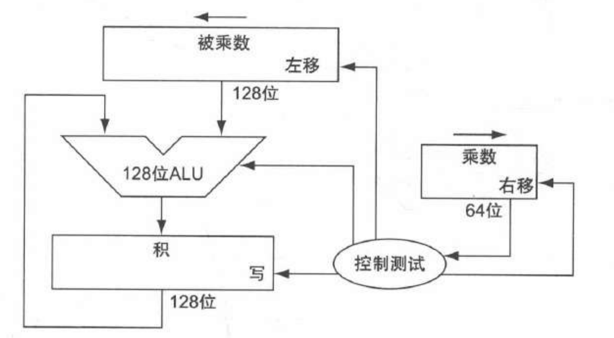
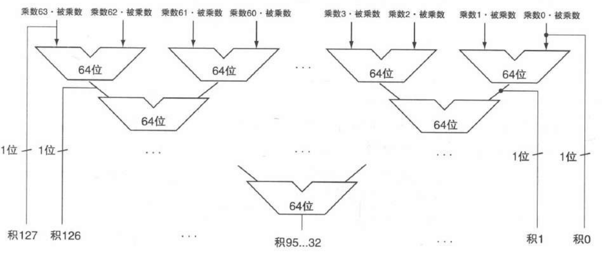
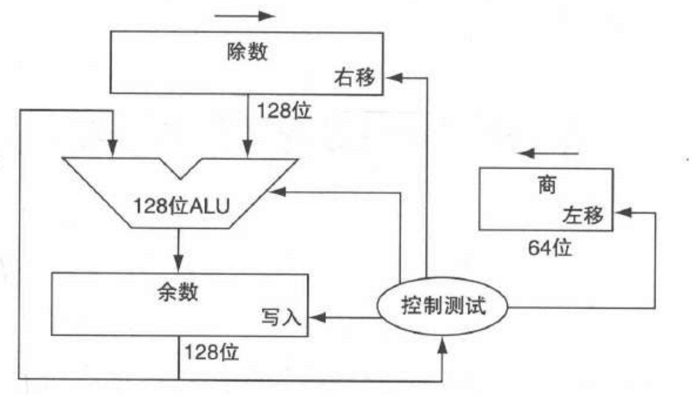
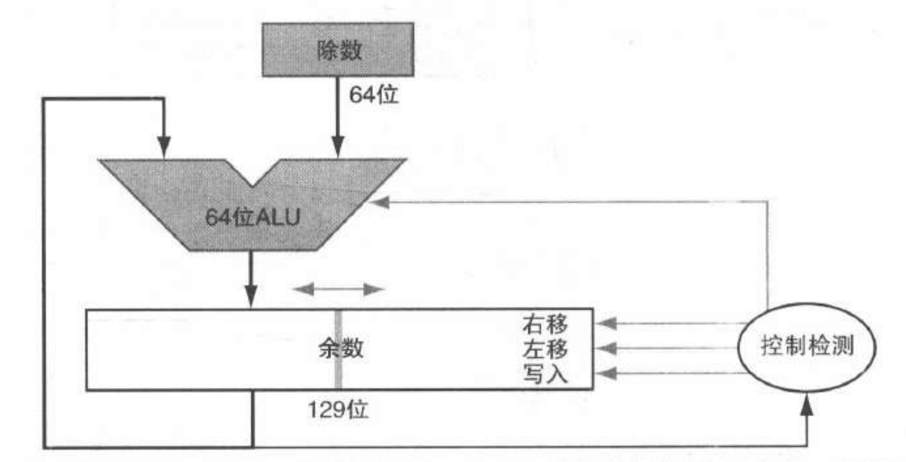
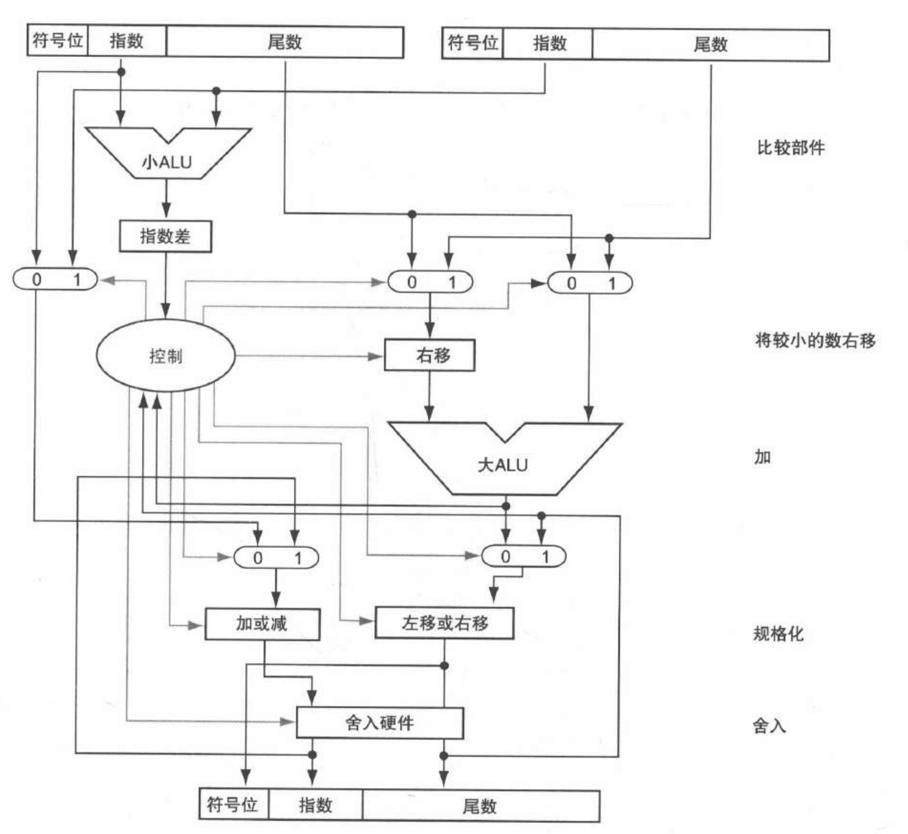
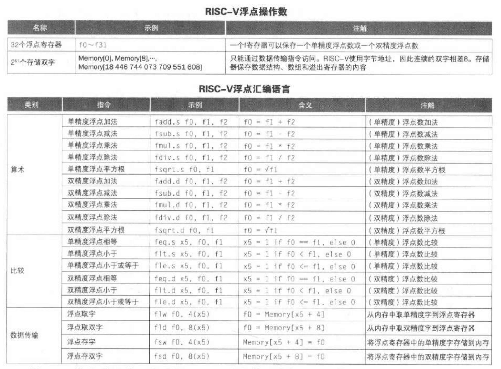

计算机组成知识点整理(3)：算术运算
Last updated on June 7, 2025 am
这是SJTU-ICE2603《计算机组成》课程的知识点整理系列。本文整理部分为“第3章：算数运算”。
3.1 加法和减法
3.1.1 加法
- 溢出条件：
- 两正数相加结果为负
- 两负数相加结果为正
3.1.2 减法
- 实现方式：加上第二个操作数的相反数
- 溢出条件：
- 正数减负数结果为负
- 负数减正数结果为正
3.1.3 溢出判断总结
| 操作 | 操作数 符号 | 操作数 符号 | 溢出条件（结果符号） |
|---|---|---|---|
3.2 乘法
3.2.1 串行乘法器
第一版乘法器

- 操作流程：
- 初始化：积寄存器清零
- 循环 64 次：
- 若乘数最低位 = 1：积 += 被乘数
- 被乘数左移 1 位
- 乘数右移 1 位
改良版乘法器
- 优化方法：并行地执行加法和移位，每次加上部分积占一个周期

- 注：乘数开始位于积寄存器的右半部分
3.2.2 快速乘法器
- 优化方法：每个乘数位提供一个 64 位加法器

- 可流水线化：几个乘法并行执行
3.2.3 RISC-V 中的乘法
| 指令 | 功能描述 |
|---|---|
mul |
取乘积低 64 位 |
mulh |
有符号乘法取高 64 位 |
mulhu |
无符号乘法取高64位 |
mulhsu |
有符号 × 无符号取高 64 位 |
- 溢出判断：用
mulh/mulhu的结果来检查 64 位的溢出
3.3 除法
3.3.1 除法器
第一版除法器

- 操作流程：
- 初始化：余数初始化为被除数，除数左移 64 位
- 循环 65 次：
- 余数 -= 除数
- 若余数 < 0：恢复余数，商左移补 0
- 否则：商左移补 1
- 除数右移 1 位
改良版除法器
- 优化方法：并行地执行减法和移位，每次减去部分余数占一个周期
- 硬件复用：可以与乘法器使用相同的硬件

3.3.2 有符号除法
- 方法：用绝对值相除，再按要求调整商和余数的符号
3.3.3 快速除法
- 无法并行：减法取决于余数的符号
- 多位预测：可以通过预测多位商再纠正错误的方法来加速
3.3.4 RISC-V 中的除法
| 指令 | 功能描述 | 指令 | 功能描述 |
|---|---|---|---|
div |
有符号除法 | divu |
无符号除法 |
rem |
有符号取余 | remu |
无符号取余 |
- 溢出和除 0：不产生错误，只返回预先定义的结果
3.4 浮点运算
3.4.1 浮点表示
- 规格化的科学计数法：
IEEE 浮点格式
| 类型 | 符号位 | 指数位 | 尾数位 | 偏阶 |
|---|---|---|---|---|
| 单精度（32位） | 1 | 8 | 23 | 127 |
| 双精度（64位） | 1 | 11 | 52 | 1023 |
- ：符号位（0 非负数，1 负数）
- 规格化二进制数的前导位 1 是隐含的，即有效位数是 24 或 53 位
- 指数 = 实际指数 + 偏阶
表示范围与精度
-
表示范围：
- 指数全 0 和全 1 为保留值
- 单精度：
- 双精度：
-
溢出：
- 上溢：正指数太大而无法用指数字段表示
- 下溢：负指数太大而无法用指数字段表示
-
浮点精度：
- 单精度：约
- 双精度：约
3.4.2 浮点加法与乘法
加法步骤
- 对齐二进制小数点（右移指数小的数）
- 将有效数字相加
- 规格化结果并检查上溢 / 下溢
- 舍入，如有需要再次规格化
硬件实现

- 通常占几个周期
- 能流水线化
3.4.3 RISC-V 中的浮点指令
- 独立浮点寄存器：
- 单精度寄存器只是双精度寄存器的后半部分
- 指令格式：与整型指令相同
- 比较结果：结果为 0 或 1 ，保存在整数目的寄存器中

- 例： 保存在 中，结果保存在 中，数字保存在全局存储空间中
1 | |
1 | |
3.4.4 算数精确性
- 附加的舍入控制（IEEE 754）：
- 为精度多保留的位（保护位、舍入位）
- 多种舍入模式
3.5 子字并行
- 子字并行：在一个宽字内部进行的并行操作
- 如：在 128 位加法器内并行操作 16 个 8 位操作数
- 用于图像和音频应用对短向量的同时运算
- 又称数据级并行、向量并行、SIMD (单指令多数据)
历年真题
- ALU属于
- A：组合逻辑电路
- B：时序电路
- C：控制器
- D：寄存器
- 在计算机的整数算术运算中，哪种类型的计算无法用流水线加速
- A：乘法
- B：加法
- C：除法
- D：减法
- 关于运算中的溢出，以下表述中不正确的是
- A：只有算术运算指令需要判断溢出
- B：逻辑运算指令一定不会引发溢出
- C：下溢指的是一个负数其绝对值过大无法表达
- D：上溢指的是一个正数其绝对值过大无法表达
Reference
https://gist.github.com/smallaccount101/6324d7c82d103783f21b7cc6da7d0f7c
注：本文中部分图片来自《计算机组成与设计·硬件/软件接口》。
计算机组成知识点整理(3)：算术运算
https://cny123222.github.io/2025/04/07/计算机组成知识点整理-3-：算术运算/